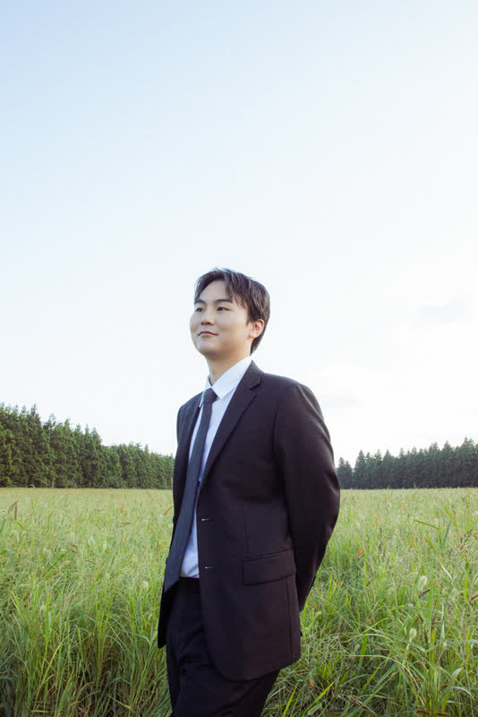

<meta charset="utf-8">
<meta name="viewport" content="width=device-width, initial-scale=1, viewport-fit=cover">
<title>진용·하림 사진</title>
<meta name="claude:viewport-fit-sides" content="cover">
<link rel="preconnect" href="https://fonts.googleapis.com">
<link rel="preconnect" href="https://fonts.gstatic.com" crossorigin>
<link href="https://fonts.googleapis.com/css2?family=Archivo:wght@500&family=Noto+Sans+KR:wght@400;500&display=swap" rel="stylesheet">
<link rel="stylesheet" href="SectionKit.css">
<style>
  /* Photos, packed: the layout to compare against PhotosScatter.html (the user's second reference image).
     Only one of the two ends up in the invitation: once the user picks, the other file, its build branch
     (scripts/BuildInvitation.py) and site/mosaic.html are deleted. Until then the full view below is the same code
     as in PhotosScatter.html, duplicated on purpose.

     Fourteen flat photos fitted into one cluster with a narrow, even gap: one large photo in the middle, a few
     medium ones and small ones around it, the outline left uneven (photos rising above or sticking out to the side,
     empty corners). Photos only: no words at all (the user's request), no border, no shadow, no rounded corner,
     no tilt, no overlap.

     The cluster is a 48-column grid whose rows are as tall as its columns are wide, so a span of columns and rows
     fixes each photo's box before its image arrives. Everything is in --mosaic-unit, 1% of the cluster width
     (the column inside a 24px margin, at most 440px), so the same arrangement holds from 320px to 440px. */
  .photos--mosaic {
    --mosaic-unit: calc((min(100vw, 440px) - 48px) / 100);
    --mosaic-gap: calc(var(--mosaic-unit) * 1.6);
    --mosaic-row: calc((var(--mosaic-unit) * 100 - var(--mosaic-gap) * 47) / 48);
    box-sizing: border-box;
    max-width: 440px;
    margin: 0 auto;
    /* 48px above the top photo: the cluster's first two rows are empty (the tall photo rises from row 3). */
    padding: calc(48px - 2 * (var(--mosaic-row) + var(--mosaic-gap))) 0 56px;
    background: var(--paper);
  }

  /* The cluster is the column inside a 24px margin, centered. */
  .mosaic__cluster {
    width: calc(var(--mosaic-unit) * 100);
    margin-inline: auto;
    display: grid;
    grid-template-columns: repeat(48, minmax(0, 1fr));
    grid-auto-rows: var(--mosaic-row);
    gap: var(--mosaic-gap);
  }

  .mosaic__photo {
    appearance: none;
    -webkit-appearance: none;
    display: block;
    min-width: 0;
    min-height: 0;
    margin: 0;
    padding: 0;
    border: 0;
    border-radius: 0;
    overflow: hidden;
    /* A shade of the paper holds the place until the photo arrives. */
    background: #efeee9;
    cursor: zoom-in;
    -webkit-tap-highlight-color: transparent;
  }

  .mosaic__photo img {
    display: block;
    width: 100%;
    height: 100%;
    object-fit: cover;
    object-position: var(--pos, 50% 50%);
  }

  /* Keyboard focus: a plain pencil line around the photo (no shadow). */
  .mosaic__photo:focus {
    outline: none;
  }

  .mosaic__photo:focus-visible {
    outline: 2px solid var(--pencil);
    outline-offset: 2px;
  }

  /* Full view: the same paper covers the screen and the one photo sits on it whole. No dark backdrop.
     Tap anywhere, press Esc or go back to put it away. */
  /* --viewer-h is the screen height: 100vh where svh is unknown, the small viewport height where it is
     (a custom property holding 100svh is never invalid at parse time, so it needs @supports, not a fallback line). */
  .mosaic__viewer {
    --viewer-h: 100vh;
    position: fixed;
    inset: 0;
    z-index: 100;
    display: grid;
    place-items: center;
    overscroll-behavior: contain;
    background: var(--paper);
  }

  @supports (height: 100svh) {
    .mosaic__viewer {
      --viewer-h: 100svh;
    }
  }

  /* The small copy shows through as the background until the original has loaded over it. */
  .mosaic__viewer-image {
    display: block;
    width: min(
      calc(100vw - 2 * max(24px, env(safe-area-inset-left, 0px))),
      calc((var(--viewer-h) - 2 * max(40px, env(safe-area-inset-top, 0px))) * var(--viewer-ratio, 1)),
      760px
    );
    height: auto;
    aspect-ratio: var(--viewer-ratio, 1);
    background-size: 100% 100%;
    pointer-events: none;
  }

  .mosaic__viewer-close {
    appearance: none;
    position: absolute;
    inset: 0;
    z-index: 1;
    width: 100%;
    height: 100%;
    margin: 0;
    padding: 0;
    border: 0;
    background: transparent;
    cursor: zoom-out;
    -webkit-tap-highlight-color: transparent;
    outline: none;
  }

  @media (prefers-reduced-motion: no-preference) {
    .mosaic__viewer:not([hidden]) {
      animation: mosaic-viewer-in 180ms ease-out;
    }

    @keyframes mosaic-viewer-in {
      from {
        opacity: 0;
      }
    }
  }
</style>

<section class="photos photos--mosaic" aria-label="사진">
  <div data-mosaic class="mosaic__cluster">
    <button type="button" data-photo class="mosaic__photo" style="grid-area: 3 / 23 / span 22 / span 13; --pos: 48% 52%"></button>
    <button type="button" data-photo class="mosaic__photo" style="grid-area: 9 / 36 / span 16 / span 10; --pos: 50% 58%"></button>
    <button type="button" data-photo class="mosaic__photo" style="grid-area: 12 / 4 / span 13 / span 19; --pos: 50% 62%"></button>
    <button type="button" data-photo class="mosaic__photo" style="grid-area: 25 / 1 / span 10 / span 13; --pos: 52% 45%"></button>
    <button type="button" data-photo class="mosaic__photo" style="grid-area: 25 / 14 / span 33 / span 22; --pos: 55% 55%"></button>
    <button type="button" data-photo class="mosaic__photo" style="grid-area: 25 / 36 / span 10 / span 13; --pos: 46% 45%"></button>
    <button type="button" data-photo class="mosaic__photo" style="grid-area: 35 / 4 / span 13 / span 10; --pos: 55% 48%"></button>
    <button type="button" data-photo class="mosaic__photo" style="grid-area: 35 / 36 / span 16 / span 10; --pos: 40% 42%"></button>
    <button type="button" data-photo class="mosaic__photo" style="grid-area: 48 / 1 / span 10 / span 13; --pos: 50% 55%"></button>
    <button type="button" data-photo class="mosaic__photo" style="grid-area: 51 / 36 / span 20 / span 13; --pos: 48% 58%"></button>
    <button type="button" data-photo class="mosaic__photo" style="grid-area: 58 / 4 / span 12 / span 18; --pos: 50% 62%"></button>
    <button type="button" data-photo class="mosaic__photo" style="grid-area: 58 / 22 / span 23 / span 14; --pos: 45% 58%"></button>
    <button type="button" data-photo class="mosaic__photo" style="grid-area: 70 / 12 / span 14 / span 10; --pos: 50% 72%"></button>
    <button type="button" data-photo class="mosaic__photo" style="grid-area: 71 / 36 / span 10 / span 13; --pos: 52% 38%"></button>
  </div>
  <div class="mosaic__viewer" id="mosaic-viewer" role="dialog" aria-modal="true" aria-label="사진 크게 보기" aria-describedby="mosaic-viewer-image" hidden>
    
    <button class="mosaic__viewer-close" id="mosaic-viewer-close" type="button" aria-label="닫기"></button>
  </div>
</section>

<script src="SectionKit.js"></script>
<script>
  (() => {
    // Full view of one photo on the paper; the same code as in PhotosScatter.html (one of the two will be deleted).
    // The photos and their places are all in the markup; this only opens and closes the view.
    // Wrapped in its own scope so nothing leaks into the page's globals.
    const VIEWER_TAP_GUARD_MS = 350;
    const viewer = document.getElementById('mosaic-viewer');
    const viewerImage = document.getElementById('mosaic-viewer-image');
    const viewerClose = document.getElementById('mosaic-viewer-close');
    const photoButtons = [...document.querySelectorAll('[data-mosaic] [data-photo]')];
    let viewerOpenedAt = 0;
    let viewerReturnFocus = null;
    // True while the open view has its own history entry, so Android's back button closes it.
    let viewerInHistory = false;

    // photos/photo-07-sm.jpg -> photos/photo-07.jpg (the 1600px original).
    const getOriginalSource = (smallSource) => {
      return smallSource.replace(/-sm\.jpg$/, '.jpg');
    };

    const handleViewerImageLoad = () => {
      viewerImage.style.backgroundImage = '';
    };

    const openViewer = (button) => {
      const thumb = button.querySelector('img');
      const width = Number(thumb.getAttribute('width'));
      const height = Number(thumb.getAttribute('height'));

      viewerOpenedAt = performance.now();
      viewerReturnFocus = button;
      viewerImage.style.setProperty('--viewer-ratio', (width / height).toFixed(4));
      viewerImage.style.backgroundImage = `url("${thumb.currentSrc || thumb.src}")`;
      viewerImage.alt = thumb.alt;
      viewerImage.setAttribute('src', getOriginalSource(thumb.getAttribute('src')));
      viewer.hidden = false;
      document.documentElement.style.overflow = 'hidden';
      viewerClose.focus({ preventScroll: true });

      try {
        window.history.pushState({ photosViewer: true }, '');
        viewerInHistory = true;
      } catch {
        viewerInHistory = false;
      }
    };

    const closeViewer = () => {
      if (viewer.hidden) {
        return;
      }

      viewer.hidden = true;
      document.documentElement.style.overflow = '';

      if (viewerReturnFocus) {
        viewerReturnFocus.focus({ preventScroll: true });
      }

      viewerReturnFocus = null;

      // Closed by tap or Esc: step back over the entry the view pushed. The popstate that follows is ignored.
      if (viewerInHistory) {
        viewerInHistory = false;
        window.history.back();
      }
    };

    const handlePhotoClick = (event) => {
      openViewer(event.currentTarget);
    };

    // The back button (or gesture) while the view is open closes the view instead of leaving the page.
    const handleViewerPopState = () => {
      if (!viewerInHistory) {
        return;
      }

      viewerInHistory = false;
      closeViewer();
    };

    const handleViewerClick = () => {
      // A held Enter repeats on the close button straight after opening; that must not close the view.
      if (performance.now() - viewerOpenedAt < VIEWER_TAP_GUARD_MS) {
        return;
      }

      closeViewer();
    };

    const handleDocumentKeyDown = (event) => {
      if (viewer.hidden) {
        return;
      }

      if (event.key === 'Escape') {
        event.preventDefault();
        closeViewer();
      }

      // The close button is the only stop inside the dialog, so Tab stays on it.
      if (event.key === 'Tab') {
        event.preventDefault();
        viewerClose.focus({ preventScroll: true });
      }
    };

    photoButtons.forEach((button) => {
      button.addEventListener('click', handlePhotoClick);
    });
    viewer.addEventListener('click', handleViewerClick);
    viewerImage.addEventListener('load', handleViewerImageLoad);
    document.addEventListener('keydown', handleDocumentKeyDown);
    window.addEventListener('popstate', handleViewerPopState);
  })();
</script>
